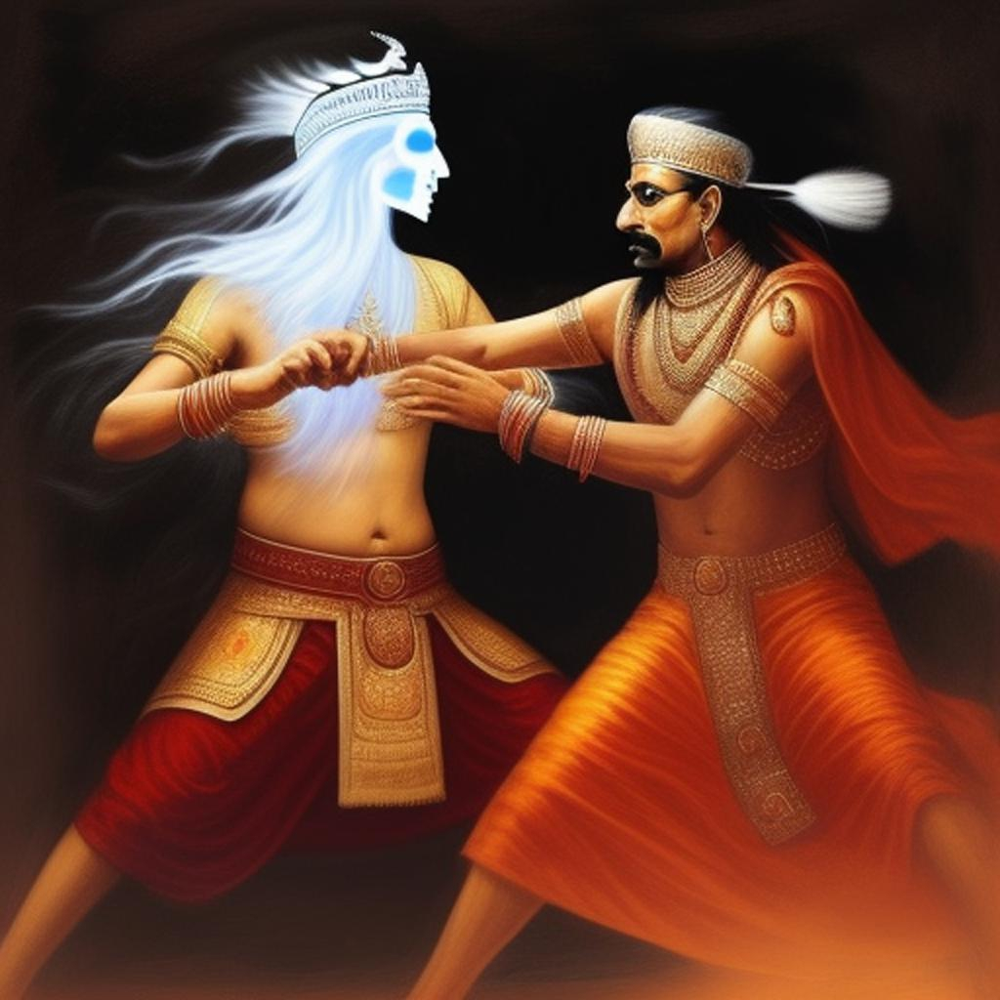

|
When young handicapped man named Kurupshana from Jayanagar heard it. His mother died soon after he was born, and his father took a second wife. His step mother kept his name Kurupshana, which means ugly looking. His stepmother ill-treated him much. It was seldom that he even got a full meal. She knew that the boy, with his handicap, would not be much use to her. He decided to go to Kanchannagar. Few princes had were there Kanchannagar. They were guessing what kind of tests the princess would put them through. The time came to announce the details of the tests. The Princess Indumati came to the stage and sat next to the king. Prime Minister got up from his seat and faced the princely suitors. "Several suitors are present here to win the hand of princess Indumati. It is her wish that they are put to certain tests and Whoever succeed in the test will qualify to wed her. You all can see the wall in front of you. You have to climb the wall and jump down into the three- tiered cage of sharp knives. The important thing is, while doing so, you must not injure yourself. There should not be a single scratch on your body from the blades of the knives." |
 |